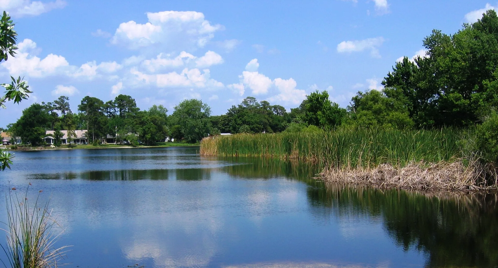

Casselberry is Seminole County suburbia with a food streak that punches past the strip centers. Semoran Boulevard carries the weight: the original Bowigens taproom, a decades-running fondue house, Peruvian ceviche, a serious sushi counter, Lebanese and Vietnamese kitchens and a sourdough bakery, most of it within a few blocks. Add a roller rink skating since 1978, a 7,000 square foot used bookstore, and a lakefront park with an art house and second Friday food trucks, and dinner stops being the only reason to come.
20 places
North Triplet Lake, from Secret Lake Park. Photo: “Casselberry northtriplet” by Seldom4, public domain, via Wikimedia Commons.

Top Picks
Where to start in Casselberry
New to the district? Start with these three, then work down the full list below.
Aji Ceviche Bar Casselberry, 1436 State Road 436, Casselberry, FL 32707-6506, United States
A bright, unpretentious Peruvian ceviche bar on State Road 436 in Casselberry, built on lime, heat, and fish that tastes fresh off the coast. Guests order the ceviche clásico and the Carretilla, drink the leche de tigre straight, and chase it with lomo saltado, crispy chicharrón de pescado, and a proper pisco sour. More than one diner says it brought back the ceviche they had in Peru, and Peruvian friends have approved it.
A family owned Lebanese kitchen and bakery on Semoran Blvd, 100 percent halal, with dough hand stretched daily and eggplants charred over open flame. Shawarma, falafel, baked kibbi, and lamb shank with biryani rice carry the menu, and a pistachio tres leches cake closes it.
An Vi Vietnamese Kitchen & Sandwich, 1052 FL-436, Casselberry, FL 32707
A bright Vietnamese kitchen on Semoran Blvd pouring house made bone broth pho, with fresh rolls, banh mi (including a fried catfish version reviewers single out), vermicelli bowls, and a Cajun fried rice with catfish that nods to Louisiana.
Casselberry holds more than two dozen lakes inside its limits, and the city's social life runs through them: its event park, its art houses, and its quietest walking park all sit on lakefront.
The event front yard
Lake Concord Park has been the city's premiere outdoor event venue since 2010, a lakefront lawn under 150 year old oaks with an amphitheater, a playground, and a sculpture garden. On the second Friday of each month it hosts food trucks and live music under the Art and Music in the Park banner, and many events are free. The newer Promenade across from City Hall adds lit fountains, more sculptures, and a small amphitheater of its own.
An arts cluster, not just a park
The Casselberry Art House has run classes and rotating exhibitions from a former lake house in the park since 2002, across acrylic, oil, watercolor, ceramics, and mixed media, and the Sculpture House next door is dedicated to 3D and installation work. On festival nights the city opens every gallery in the park at once.
The honest word on the water
Lake Howell is the city's largest lake, and it is private: there is no public boat ramp or public parking, so it is scenery, not a stop. For public water, Secret Lake Park wraps three connected lakes with a boardwalk loop, kayak access, and room to spread out. On foot or wheels, the Casselberry Greenway runs 5 miles through 4 parks and links onward to the Kewannee Trail toward the wider Seminole County network; the Cross Seminole Trail itself does not pass through Casselberry.
Pick an Occasion
Loading the guide...
The Full List
Every place in Casselberry
Full cards for the whole district, Local Picks first, then A to Z. Every name opens its own page, with directions and more nearby. The map, filters and export live in the full finder.
Aji Ceviche Bar Casselberry, 1436 State Road 436, Casselberry, FL 32707-6506, United States
A bright, unpretentious Peruvian ceviche bar on State Road 436 in Casselberry, built on lime, heat, and fish that tastes fresh off the coast. Guests order the ceviche clásico and the Carretilla, drink the leche de tigre straight, and chase it with lomo saltado, crispy chicharrón de pescado, and a proper pisco sour. More than one diner says it brought back the ceviche they had in Peru, and Peruvian friends have approved it.
A family owned Lebanese kitchen and bakery on Semoran Blvd, 100 percent halal, with dough hand stretched daily and eggplants charred over open flame. Shawarma, falafel, baked kibbi, and lamb shank with biryani rice carry the menu, and a pistachio tres leches cake closes it.
An Vi Vietnamese Kitchen & Sandwich, 1052 FL-436, Casselberry, FL 32707
A bright Vietnamese kitchen on Semoran Blvd pouring house made bone broth pho, with fresh rolls, banh mi (including a fried catfish version reviewers single out), vermicelli bowls, and a Cajun fried rice with catfish that nods to Louisiana.
Bagel King Casselberry, 1455 Semoran Blvd, Suite 113, Casselberry, FL 32707
The retail cafe of the local Bagel King family, serving New York style kettle baked bagels made fresh daily, with home style breakfast and lunch. Challah French toast, biscuits and gravy, and an everything bagel bacon egg and cheese lead the favorites.
The original Bowigens taproom, pouring since 2015 on Semoran Blvd, with 25 or more taps, a pilot brewhouse for small batch one-offs, and a full kitchen built to pair with the beer. The 7 Layer Stout has won national awards, and the room still runs like a neighborhood hangout started by two musician friends.
Brightlight Books, 161 E SR 436, Fern Park, FL 32730
A family run used bookstore on SR 436 in Fern Park, buying, selling, and trading since 1995, with roughly 200,000 books, CDs, DVDs, and vinyl across 7,000 square feet. One of the largest theology collections in the Southeast gives it a depth most used shops never reach.
Casselberry Art House, 127 Quail Pond Circle, Casselberry, FL 32707
The city's art house since 2002, a former lake house on Lake Concord turned gallery and classroom, with rotating exhibitions and classes in acrylic, oil, watercolor, ceramics, and mixed media. The Sculpture House next door covers 3D and installation work, and festival nights open every gallery in the park at once.
A Casselberry dining room dressed like a Colorado ski lodge, all timber, stone and cozy booths built for lingering over a shared pot. Cheese fondues like the Muenster Mash start the night, mains grill on a hot rock at the table, and a Blizzard Turtle or Bailey's salted chocolate fondue finishes it. Guests call it romantic and festive, and better value than the big fondue chains; on busy nights the room gets loud and the courses take their time.
Cubans On The Run, 2956 S US 17-92, Casselberry, FL 32707
A small mom and pop Cuban counter on 17-92 where the owner greets regulars by name. The Cuban sandwich, ropa vieja, chimichurri steak, and papa rellena anchor a menu that runs deep for its size, from caldo gallego to tres leches, all at low prices.
Debbies is a classic Casselberry dive on Semoran Boulevard, a small, old-school full liquor bar where the atmosphere stays fun and relaxing. Pool tables, poker games and Jell-O shots fill the room, the bartenders are awesome, and the prices feel like another era. Guests love the small bar feel, the fun crowd, and a night that is never boring.
Lake Concord Park, 95 Triplet Lake Drive, Casselberry, FL 32707
Casselberry's event front yard since 2010: a lakefront park with 150 year old oaks, an amphitheater, a sculpture garden, and a playground, plus the newer Promenade across from City Hall with lit fountains. Second Friday food truck nights and art festivals keep it busy, and most events are free.
Original Anthony's NY Pizza, 1455 FL-436, Suite 105, Casselberry, FL 32707
The self declared original Anthony's of Orlando, slinging New York style pies since 1987 for Casselberry, Winter Park, and Maitland. The 18 inch Extravaganza loads up sausage, meatballs, and pepperoni, and the menu runs to wings, subs, and chicken parm.
A family owned Mexican kitchen on 436 built around the poblano pepper, with chile rellenos, combination plates, and a full vegetarian section. Top shelf margaritas, red sangria, and a coconut mojito anchor the bar, and a private room takes group dinners.
Secret Lake Park, 200 N Triplet Lake Drive, Casselberry, FL 32707
A quiet park of about 40 acres wrapped around three connected lakes, with a boardwalk loop, kayak access, pavilions, courts, and the city's recreation center. It is the calm counterpart to Lake Concord's event energy, good for a shaded walk and a wood stork sighting.
Semoran Skateway, 2670 Cassel Creek Blvd, Casselberry, FL 32707
Family owned since 1978, this is the neighborhood roller rink generations of Casselberry kids grew up in, now relaunched with lessons, adult rhythm nights, an arcade, and a snack bar. Parents skating the same maple floor they skated as kids is the whole story here.
Sourdough Bread House, 5761 US-17-92, Casselberry, FL 32707-3819, United States
A cozy, family-owned Turkish bakery cafe in Casselberry built around slow-fermented sourdough that guests say melts in your mouth. The Turkish breakfast is the main event: menemen with soudjouk, the Aegean omelet, huge plates, and Turkish coffee people get obsessed with. Service runs slow and the wait can stretch, but the bread is the reason to stay anyway.
Velvet Brew Cafe, 3950 S US 17-92, Suite 1024, Casselberry, FL 32707
A Latin leaning bakery cafe on 17-92 pairing smooth coffee with pan de bono, guava and cheese roscon, alfajores, and croissants including a pistachio one regulars chase. A cozy, modern room made for slow mornings and pastry runs.
Vinzo's Italian Grill & Pizzeria, 1006 FL-436, Casselberry, FL 32707
A family Italian grill running 22 years in the Semoran Blvd dining row, working from family recipes that came down from New York and New Jersey. Kickin Shrimp, chicken penne alla vodka, stromboli, and cannoli give it more range than the pizzeria name suggests.
A Casselberry strip plaza hides a serious sushi counter: WA Sushi, where Chef Hong flies fish in from Japan and the room stays cozy and unpretentious. Guests call it a diamond in the rough, pointing to the Grand Nigiri Moriawase with bluefin toro, A5 Miyazaki wagyu nigiri and pieces that melt in the mouth, plus an Inferno Roll for heat. Matcha tiramisu closes the meal on a quiet, precise note.
A Mexicolombian grill and bar on 436, where birria tacos share the menu with a Burrito Paisa and a parrillada built for the table. Cozy booths, a small outdoor lounge, and mango margaritas make it an easy neighborhood night.